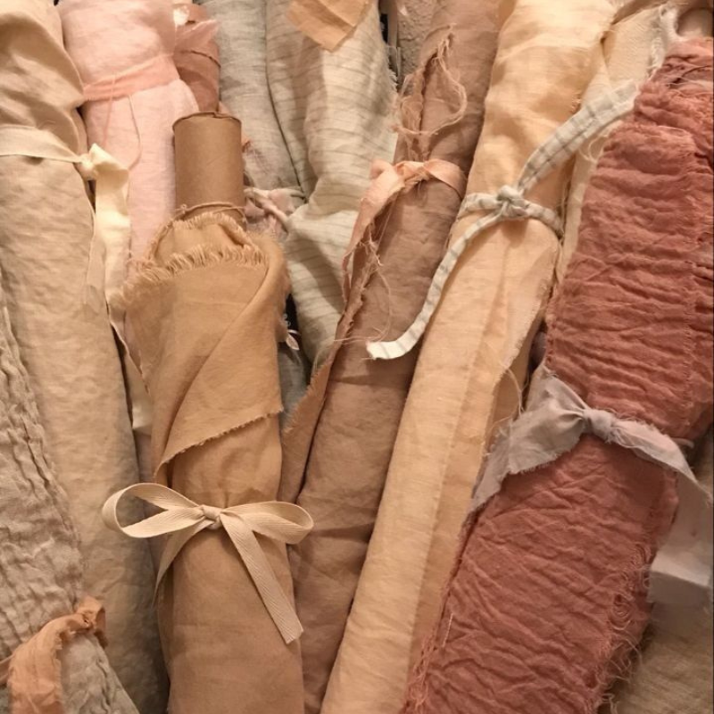
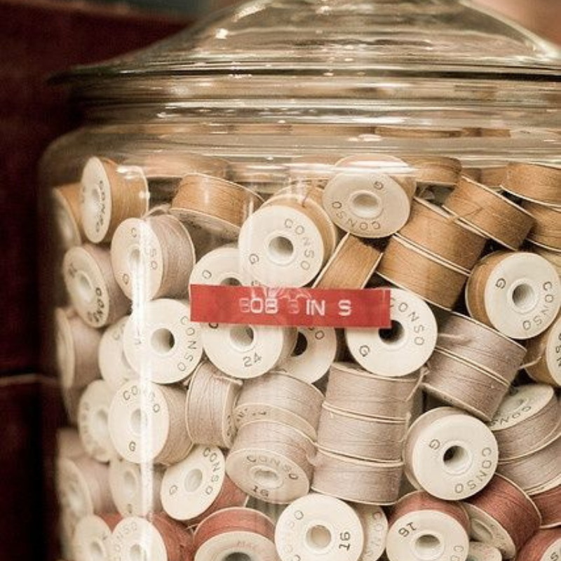
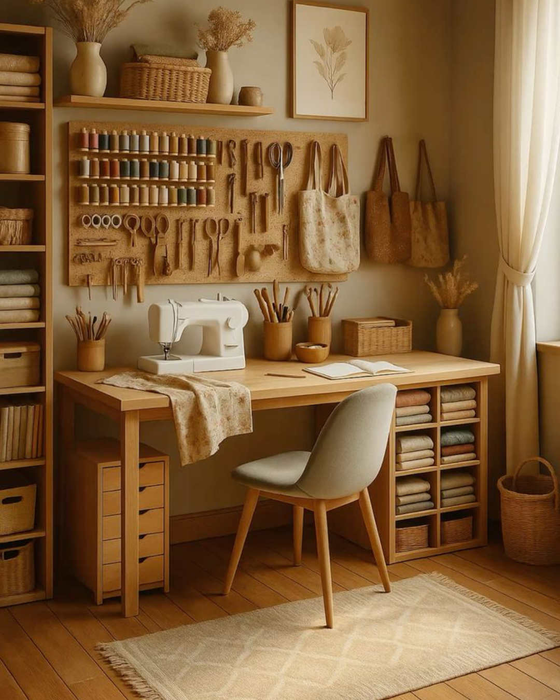

Onde a precisão contemporânea encontra o calor do artesanato. Criamos experiências e produtos com alma, propósito e perfeição técnica.

Detalhes
Cada peça é meticulosamente pensada para durar uma vida inteira.
Experiências táteis e visuais desenhadas com exclusividade.
Projetos únicos concebidos a partir da sua visão...
Consultoria especializada em paletas orgânicas...
Recuperação meticulosa de peças artesanais...
Um vislumbre do nosso portfólio.


